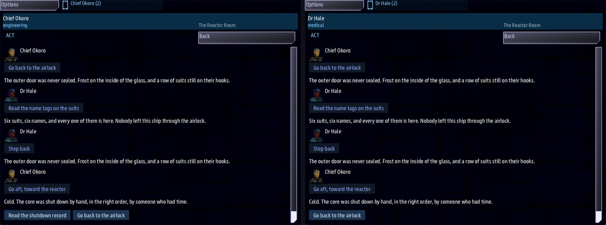

Class 3, Lecture 3 - Everyone gets a menu¶
What you will have at the end¶
The hulk keeps a secret, and no one person can find it. The engineer is offered one reading, the surgeon another, and the captain's log only opens once the party has put two readings together.

Chief Okoro (left) and Dr Hale (right) in the reactor room at the same moment: the same page, but only the engineer is offered Read the shutdown record.You will edit one section of mission.amd. Nothing in story.mast changes.
The video¶
About 5 minutes. Subtitles are available in the player.
Before you start¶
- Your mission from Lecture 2: the crew roster, three rooms, the quest and the card.
sbs lint MyBoardingsaysclean.- Three consoles if you can manage it: Helm to fly, and Engineering and Science to go aboard. Two also work, and Step 7 explains what you see then.
Words for this lecture:
| Word | Meaning |
|---|---|
| Condition | An if on the end of a choice. It decides who is offered the choice |
| Outcome | What happens when a choice is taken. It is written after a ; |
| Reading | A choice only one job is offered, which teaches the party something |
| Fact | One thing the party has found out. It has a one-word name |
| Covering | Taking a reading that belongs to a job nobody in the party holds |
Step 1 - A choice for one job¶
Open mission.amd and find The Airlock. Add one choice above the others:
Then add the room it leads to, below the airlock's last choice and above The Reactor Room:
### [Six Suits](suits)
% Six suits, six names, and every one of them is here. Nobody left this ship through the airlock.
- [Step back](airlock)
The new choice has three parts.
| Part | What it means |
|---|---|
[Read the name tags on the suits](suits) |
The words on the button, and the room it leads to. Same as before |
if medical |
Only someone whose job is medical is offered this choice |
; learn suits |
When it is taken, the party learns a fact named suits |
The job word is the one you wrote on Roles: in your crew roster. Dr Hale has
Roles: medical, so this choice is hers. Chief Okoro is not offered it. In the game, it
is a fourth button on the Science console's handheld, in the airlock, and the
Engineering console's handheld has three.
The fact name is yours to invent. One word is best.
Step 2 - A choice for the other job¶
In The Reactor Room, add a choice above the way back:
and its room, below the reactor room and above The Bridge:
### [The Shutdown Record](shutdown)
% Shut down from this room, and then the restart key was taken out and carried away. Whoever did it did not mean for her to wake up.
- [Step back](reactor)
Now each of your two people has one thing only they can read.
Step 3 - A door that opens when they know enough¶
In The Bridge, add a choice above the way back:
and the room behind it, at the end of the file:
### [The Last Entry](last_entry)
% Six aboard. Core cold. Key over the side. The last entry is one word: QUARANTINE.
- [Return to the ship]()
learned is how many different facts the party has. It belongs to the whole party, not to
one person: the surgeon's reading and the engineer's reading both count.
A fact counts once. Reading the suit tags twice is still one fact.
The Last Entry is where this story ends, so it is the second room with a way home. That is
Lecture 2's rule: the () choice goes where leaving is a decision.
Step 4 - A line that changes¶
Replace the bridge's one % line with two:
%{learned < 2} Every station is dark but one. The log is open on the captain's chair, locked behind a question you cannot answer yet.
%{learned >= 2} Every station is dark but one. The log is open on the captain's chair, and now you know what it is going to ask.
A condition in curly brackets right after the % decides whether that line can be used.
The first line tells a party that arrives too early that there is more to find. Without
it, they see a room with nothing to do and wonder if the game is broken.
Step 5 - Three rules for a menu¶
- Nobody gets an empty menu. Every room keeps at least one choice with no
if. Yours all have a way back, so this is already true. - A reading goes somewhere and comes back. The choice leads to a short room that says what was found. That room's only choice returns to where the party was.
- Count your facts. You have two facts and the log asks for two. If you ask for three, the log can never open. Lint cannot count them for you.
A condition is one thing. Today you have two shapes of it: a job (if medical), and a
count of facts (if learned >= 2). There is no and, no or and no not.
Step 6 - Check it¶
Every row below was tried on the finished file: one change, lint, and then every party walked through it.
| Mistake | What the game does | Lint says |
|---|---|---|
; lern suits |
Offers the reading, and teaches nothing. The log never opens | unknown-outcome-verb |
; learn with no name after it |
The same | learn-nothing |
if learned => 2 (the sign backwards) |
Offers the choice to nobody | unreadable-guard, and guard-learned-unknown on the same line |
if medical, learn suits (a comma where the ; goes) |
Offers the choice to nobody | unreadable-guard |
; learn suits if medical (the if after the ;) |
Offers the choice to everybody | guard-after-outcome |
if medical and learned >= 1 |
Offers the choice to nobody | guard-joined |
if suits on the log (a fact by its name) |
Offers the choice to nobody | guard-names-a-fact |
if hale (a person, where a job goes) |
Offers the choice to nobody | guard-names-a-person |
| A choice that leads to a room you have not written | Ends the visit when the choice is taken | dangling-choice |
What lint cannot see. Each of these says clean:
| You wrote | What happens |
|---|---|
if medcal (a misspelled job) |
Nobody is offered the reading, and nobody covers it |
if medical learn suits (no ; at all) |
The same. The three words are read as one long job |
if science for Dr Hale's reading |
Science is her seat. Her job is medical. The reading goes to one console, marked as covering, with Dr Hale standing in the room |
if learned >= 5 when you have two facts |
The log never opens |
Two readings that learn the same name |
They count once. The log never opens |
%{learnd < 2} (a misspelled word in the curly brackets) |
That line is always allowed. Once the party knows enough, the bridge shows one of your two lines, picked at random |
For these, check by eye: every word after if or inside { } is either learned or a
job from a Roles: line in your roster. Capital letters do not matter: if Medical
works.
Step 7 - Play it¶
Start the game with Helm to fly, and the two people on your roster:
- Fly inside 500 of the hulk (zoom Helm's map out once to find it: it is the mark with no name until you are within about 4K). On Engineering and on Science, press the handheld icon, open Boarding Party and press BEAM DOWN.
- In the airlock, the Science console (Dr Hale) is offered Read the name tags on the suits. The Engineering console is not.
- Go forward to the bridge first. The log is not offered, and the line says why.
- Go back. Dr Hale reads the suit tags. Go aft. Chief Okoro reads the shutdown record.
- Go forward again. The line has changed, and Answer the log is there for both.
The party moves together. When anyone picks a way out, everyone goes. Both consoles show the same page, with every pick written under the name of the person who made it.
With Engineering alone aboard, leave the Science console at its own station, aboard the ship. You are Chief Okoro, and there is no surgeon in the party. The game hands her reading to you, marked so you know whose it is. It is the last button, after Return to the ship:
A short crew can still finish the story. Nine presses take Chief Okoro alone from the airlock to the last entry and home. Covering happens for a job on your roster, and for the game's standard jobs: medical, engineering, security, science, helm, weapons and comms are among them.
If something goes wrong¶
| What you see | Likely cause |
|---|---|
| Nobody is offered a reading | The word after if is not the word on that person's Roles: line, or the ; is missing |
| The doctor is in the party, and her reading is on another console marked as covering | The roster says one word and the choice says another, such as her seat |
| The log never opens | The number after learned >= is bigger than the number of different facts in your rooms, or two readings learn the same name |
| The log is open before anyone has read anything | The if learned >= 2 is missing from the choice, or sits after a ; |
| A choice has disappeared for everyone | Its condition is not one the game can read. Run lint |
| The bridge shows the "cannot answer yet" line after both readings | A word inside the curly brackets is misspelled |
Exercise¶
In Lecture 2 you added a third person to your roster, at Helm, with a job of your choosing.
- Give that person a reading on the bridge: a choice with
ifand your job word, and; learnwith a new fact name. - Write the short room it leads to, with a way back to the bridge.
- Leave the log at
learned >= 2. Now any two of the three readings open it, so there is more than one way through your story. - Run lint, then play it with one console aboard and find your reading marked as covering. An invented job is covered too, because it is on your roster.
- Break it on purpose: misspell your job word on the choice. Run lint, read
clean, and play it once. Put it right.
Checkpoint¶
You are done when all four are true:
sbs lint MyBoardingsaysclean.- The log is not offered when the party goes straight to the bridge, and the line says why.
- Each reading is offered to the person whose job it is, or marked as covering when that person is not in the party.
- With two facts learned, Answer the log appears and leads to the last entry.
Next¶
Lecture 4 gives your crew skills, so a choice can ask how good someone is and not only what their job is.
Further reading¶
Nothing here is needed for Lecture 4.
- "Boarding parties" in the library documentation: conditions,
learn, and what happens when a party is short of people. - The file you borrowed from in Lecture 1 writes
if medical >= 1where this page writesif medical. They mean the same thing.
Download this lecture's finished files (a zip of its example folder).